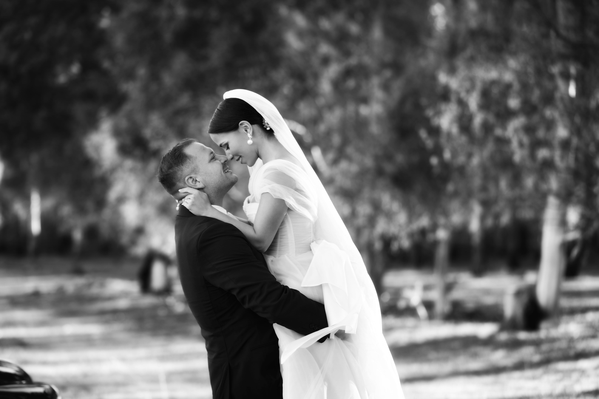

Tre generazioni di fotografi. Una sola famiglia. Una sola missione: rendere eterno ogni istante che conta.
Ogni matrimonio racconta una storia diversa.
Lo studio fotografico Fotottica D'Aleo nasce nel 1953 a Paceco, in provincia di Trapani. Da allora, tre generazioni di fotografi si sono susseguite portando avanti la stessa dedizione verso il proprio mestiere.
Oggi è Francesco D'Aleo a guidare lo studio, unendo la cura artigianale ereditata dalla famiglia a uno sguardo contemporaneo su ogni cerimonia.

Tre generazioni della famiglia D'Aleo, un unico studio, la stessa passione tramandata dal 1953.
Ogni scatto è studiato nella luce, nella posa e nel momento giusto per essere colto.
Dall'anello al bouquet, dal sorriso allo sguardo: nulla è lasciato al caso.
Non esistono due matrimoni uguali: ogni reportage nasce su misura per voi.
Francesco D'Aleo nasce nel 1985 e respira la fotografia fin da bambino grazie al nonno Francesco, affermato fotografo matrimonialista. Appassionato d'arte, musica e letteratura, muove i primi passi sul campo come assistente durante gli studi, sviluppando un forte legame con la fotografia di matrimonio.
Il suo è uno stile raffinato, spontaneo ed emozionale: un linguaggio ricco di dettagli dove luce, forma e colore raccontano con reale eleganza il giorno più importante di chi si affida alla sua visione.
Lo studio si trova nel cuore di Paceco, a pochi minuti da Trapani ed Erice.